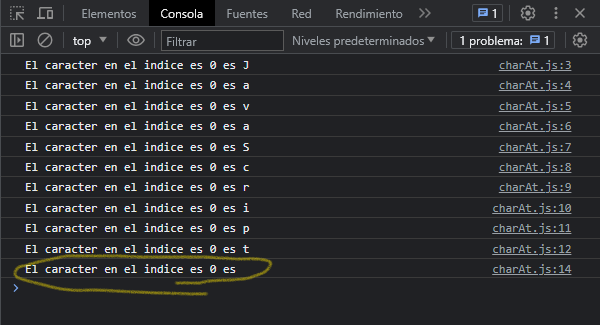

Los caracteres de una cadena se indexan de izquierda a derecha. En caso de indicar un parametro que esta fuera del rango, JavaScript devuelve una cadena vacia. Veamos el ejemplo siguiente:
let texto = "JavaScript en el navegador"
console.log(`El caracter en el indice es 0 es ${texto.charAt(0)}`)
console.log(`El caracter en el indice es 1 es ${texto.charAt(1)}`)
console.log(`El caracter en el indice es 2 es ${texto.charAt(2)}`)
console.log(`El caracter en el indice es 3 es ${texto.charAt(3)}`)
console.log(`El caracter en el indice es 4 es ${texto.charAt(4)}`)
console.log(`El caracter en el indice es 5 es ${texto.charAt(5)}`)
console.log(`El caracter en el indice es 6 es ${texto.charAt(6)}`)
console.log(`El caracter en el indice es 7 es ${texto.charAt(7)}`)
console.log(`El caracter en el indice es 8 es ${texto.charAt(8)}`)
console.log(`El caracter en el indice es 9 es ${texto.charAt(9)}`)
console.log(`El caracter en el indice es 555 es ${texto.charAt(555)}`)
El resultado en consola es el siguiente:
Como resultado podemos ver que al indicar un parametro a partir del cero, en relacion al indice, este nos devuelve el caracter al que pertenece, siempre y cuando se mantenga en el rango a la longitud de la cadena de texto. Caso contrario si especificamos un indice fuera de rango, pues nos devuelve una cadena vacia.